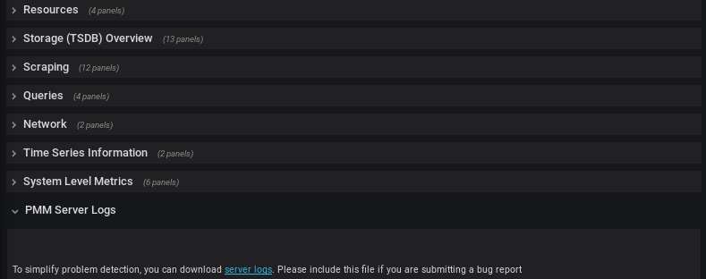

Frequently Asked Questions
- How can I contact the developers?
- What are the minimum system requirements for PMM?
- How to control memory consumption for PMM? (relevant to versions lower than 1.13 of PMM)
- How to control data retention for PMM?
- Where are the services created by PMM Client?
- Where is DSN stored?
- Where are PMM Client log files located?
- How often are nginx logs in PMM Server rotated?
- What are common performance considerations?
- Can I stop all services at once?
- What privileges are required to monitor a MySQL instance?
- Can I monitor multiple MySQL instances?
- Can I rename instances?
- Can I use non-default ports for instances?
- How to troubleshoot communication issues between PMM Client and PMM Server?
- What resolution is used for metrics?
- Why do I get Failed ReadTopologyInstance error when adding MySQL host to Orchestrator?
- How to set the root password when PMM Server is installed as a virtual appliance
- How to install the experimental version of PMM Server?
How can I contact the developers?
The best place to discuss PMM with developers and other community members is the community forum.
If you would like to report a bug, use the PMM project in JIRA.
What are the minimum system requirements for PMM?
PMM Server
Any system which can run Docker version 1.12.6 or later.
It needs roughly 1 GB of storage for each monitored database node with data retention set to one week.
NOTE: By default, retention is set to 30 days for Metrics Monitor and to 8 days for Query Analytics. Also consider disabling table statistics, which can greatly decrease Prometheus database size.
Minimum memory is 2 GB for one monitored database node, but it is not linear when you add more nodes. For example, data from 20 nodes should be easily handled with 16 GB.
PMM Client
Any modern 64-bit Linux distribution. It is tested on the latest versions of Debian, Ubuntu, CentOS, and Red Hat Enterprise Linux.
Minimum 100 MB of storage is required for installing the PMM Client package. With good constant connection to PMM Server, additional storage is not required. However, the client needs to store any collected data that it is not able to send over immediately, so additional storage may be required if connection is unstable or throughput is too low.
How to control memory consumption for PMM? (relevant to versions lower than 1.13 of PMM)
Prometheus 1.x.x, shipped with PMM up to version 1.13.0, used by default 768 MB of memory for storing the most recently used data chunks.
If you haven’t upgraded to a version 1.13.0 or higher, you may require a higher limit, depending on the amount of data coming into Prometheus, to avoid throttling data ingestion, or to allow less memory consumption by Prometheus.
For compatibility reasons PMM 1.13.0 and above is still supporting Prometheus 1.x, but with substantially decreased resources: now it uses only 15% of available memory and its connections amount limit is managed by the MAX_CONNECTIONS environment variable, set to 15 by default.
How to control data retention for PMM?
By default, Prometheus stores time-series data for 30 days, and QAN stores query data for 8 days.
Depending on available disk space and your requirements, you may need to adjust data retention time.
You can control data retention by passing the METRICS_RETENTION and QUERIES_RETENTION environment variables when creating and running the PMM Server container. To set environment variables, use the -e option. The value should be the number of hours, minutes, or seconds. For example, the default value of 30 days for METRICS_RETENTION is 720h. You probably do not need to be more precise than the number hours, so you can discard the minutes and seconds. For example, to decrease the retention period for Prometheus to 8 days:
-e METRICS_RETENTION=192h
Where are the services created by PMM Client?
When you add a monitoring instance using the pmm-admin tool, it creates a corresponding service. The name of the service has the following syntax:
pmm-<type>-<port>
For example: pmm-mysql-metrics-42002.
The location of the services depends on the service manager:
| Service manager | Service location |
|---|---|
systemd |
/etc/systemd/system/ |
upstart |
/etc/init/ |
systemv |
/etc/init.d/ |
To see which service manager is used on your system, run as root pmm-admin info.
Where is DSN stored?
Every service created by pmm-admin when you add a monitoring instance gets a DSN from the credentials provided, auto-detected, or created (when adding the instance with the --create-user option).
For MySQL and MongoDB metrics instances (mysql:metrics and mongodb:metrics services), the DSN is stored with the corresponding service files. For more information, see Where are the services created by PMM Client?.
For QAN instances (mysql:queries service), the DSN is stored in local configuration files under /usr/local/percona/qan-agent.
Also, a sanitized copy of DSN (without the passowrd) is stored in Consul API for information purposes (used by the pmm-admin list command).
Where are PMM Client log files located?
Every service created by pmm-admin when you add a monitoring instance has a separate log file located in /var/log/. The file names have the following syntax: pmm-<type>-<port>.log.
For example, the log file for the MySQL QAN monitoring service is /var/log/pmm-mysql-queries-0.log.
You can view all available monitoring instance types and corresponding ports using the pmm-admin list command. For more information, see Listing monitoring services.
How often are nginx logs in PMM Server rotated?
PMM Server runs logrotate to rotate nginx logs on a daily basis and keep up to 10 latest log files.
What are common performance considerations?
If a MySQL server has a lot of schemas or tables, it is recommended to disable per table metrics when adding the instance:
$ sudo pmm-admin add mysql --disable-tablestats
NOTE: Table statistics are disabled automatically if there are over 1 000 tables.
For more information, run as root pmm-admin add mysql --help.
Can I stop all services at once?
Yes, you can use pmm-admin to start and stop either individual services that correspond to the added monitoring instances, or all of them at once.
To stop all services:
$ sudo pmm-admin stop --all
To start all services:
$ sudo pmm-admin start --all
For more information about starting and stopping services, see Starting monitoring services.
You can view all available monitoring instances and the states of the corresponding services using the pmm-admin list command. For more information, see Listing monitoring services.
What privileges are required to monitor a MySQL instance?
See Creating a MySQL User Account to Be Used with PMM.
Can I monitor multiple MySQL instances?
Yes, you can add multiple MySQL instances to be monitored from one PMM Client. In this case, you will need to provide a distinct port and socket for each instance using the --port and --socket parameters, and specify a unique name for each instance (by default, it uses the name of the PMM Client host).
For example, if you are adding complete MySQL monitoring for two local MySQL servers, the commands could look similar to the following:
$ sudo pmm-admin add mysql --user root --password root --create-user --port 3001 instance-01
$ sudo pmm-admin add mysql --user root --password root --create-user --port 3002 instance-02
For more information, run pmm-admin add mysql --help.
Can I rename instances?
You can remove any monitoring instance as described in Removing monitoring services and then add it back with a different name.
When you remove a monitoring service, previously collected data remains available in Grafana. However, the metrics are tied to the instance name. So if you add the same instance back with a different name, it will be considered a new instance with a new set of metrics. So if you are re-adding an instance and want to keep its previous data, add it with the same name.
Can I use non-default ports for instances?
When you add an instance with the pmm-admin tool, it creates a corresponding service that listens on a predefined client port:
| General OS metrics | linux:metrics | 42000 |
| MySQL metrics | mysql:metrics | 42002 |
| MongoDB metrics | mongodb:metrics | 42003 |
| ProxySQL metrics | proxysql:metrics | 42004 |
| PostgreSQL metrics | postgresql:metrics | 42005 |
If a default port for the service is not available, pmm-admin automatically chooses a different port.
If you want to assign a different port, use the --service-port option when adding instances.
How to troubleshoot communication issues between PMM Client and PMM Server?
There is a pmm-admin check-network command, which checks connectivity between PMM Client and PMM Server and presents the summary of this check in a human readable form.
Broken network connectivity may be caused by rather wide set of reasons. Particularly, when using Docker, the container is constrained by the host-level routing and firewall rules. For example, your hosting provider might have default iptables rules on their hosts that block communication between PMM Server and PMM Client, resulting in DOWN targets in Prometheus. If this happens, check firewall and routing settings on the Docker host.
Also PMM is able to generate a set of diagnostics data which can be examined and/or shared with Percona Support to solve an issue faster. You can get collected logs from PMM Client using the pmm-admin command. Obtaining logs from PMM Server can be done either by specifying the URL or by clicking the server logs link on the Prometheus dashboard:

What resolution is used for metrics?
The mysql:metrics service collects metrics with different resolutions (1 second, 5 seconds, and 60 seconds)
The linux:metrics and mongodb:metrics services are set up to collect metrics with 1 second resolution.
In case of bad network connectivity between PMM Server and PMM Client or between PMM Client and the database server it is monitoring, scraping every second may not be possible when latency is higher than 1 second. You can change the minimum resolution for metrics by passing the METRICS_RESOLUTION environment variable when creating and running the PMM Server container. To set this environment variable, use the -e option. The values can be between 1s (default) and 5s. If you set a higher value, Prometheus will not start.
For example, to set the minimum resolution to 3 seconds:
-e METRICS_RESOLUTION=3s
NOTE: Consider increasing minimum resolution when PMM Server and PMM Client are on different networks, or when Adding an Amazon RDS DB instance to PMM.
Why do I get Failed ReadTopologyInstance error when adding MySQL host to Orchestrator?
You need to create Orchestrator’s topology user on MySQL according to this section.
How to set the root password when PMM Server is installed as a virtual appliance
With your virtual appliance set up, you need to set the root password for your PMM Server. By default, the virtual machine is configured to enforce changing the default password upon the first login.
Run your virtual machine and when requested to log in, use the following credentials:
- User:
root - Password:
percona
The system immediately requests that you change your password. Note that, for the sake of security, your password must not be trivial and pass at least the dictionary check. If you do not provide your password within sixty seconds you are automatically logged out. In this case use the default credentials to log in again.
After the new password is set you control this system as a superuser and can make whatever changes required.
How to install the experimental version of PMM Server?
If you would like to experiment with the latest development version using Docker, you may use the dev-latest image. This version, however, is not intended to be used in a production environment.
$ docker pull perconalab/pmm-server:dev-latest
If you would like to experiment with the latest development version of PMM Server VirtualBox image, download the development version as follows:
$ wget "http://percona-vm.s3-website-us-east-1.amazonaws.com/PMM-Server-dev-latest.ova"